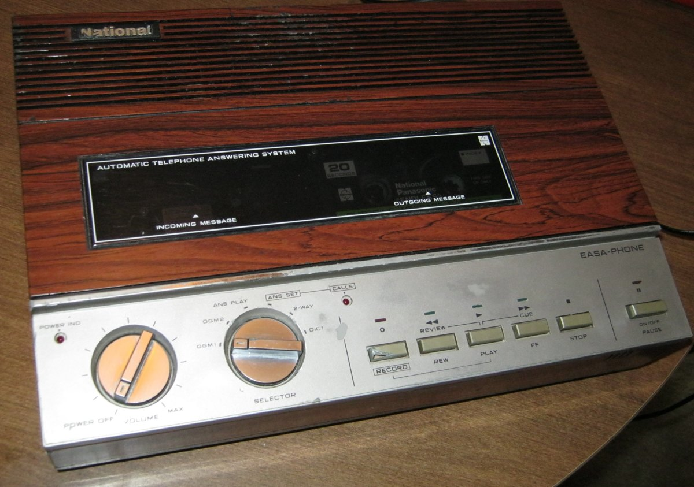
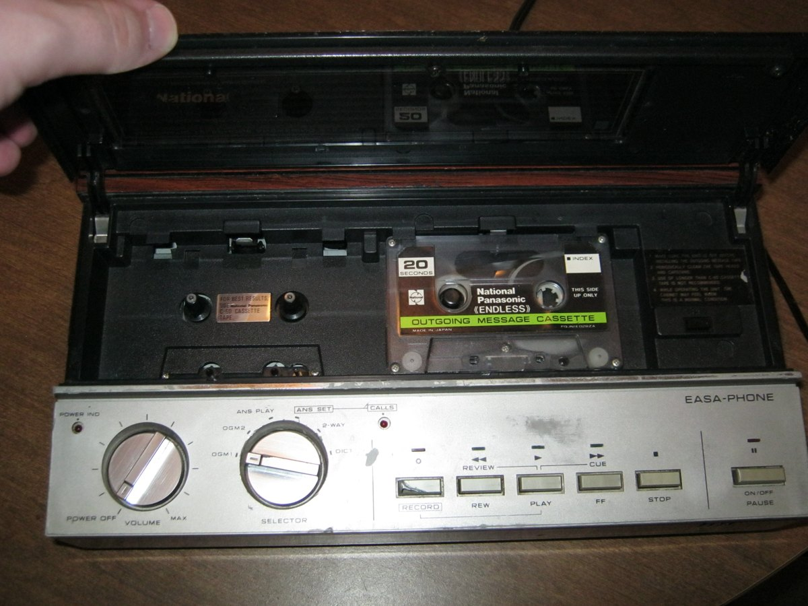

National Easa-Phone Answering Machine
The answerphone whose message tape physically cannot be rewound — an endless loop of magnetic tape

Overview
The National Easa-Phone is a consumer answering machine made by Matsushita Electric and sold under the National/Panasonic brand, produced in the late 1970s through early 1980s. Its defining feature is a pair of endless-loop (continuous-loop) cassette tapes: one plays the outgoing greeting, the other records incoming messages. Because an endless-loop tape is literally a ring of magnetic tape that cannot be rewound, message playback is a waiting game — the machine's mechanical tape counter tracks position, and to replay a message you let the loop come back around.
The endless-loop answerphone mechanism was pioneered decades earlier. Kazuo Hashimoto, who later patented a digital answering-machine architecture, worked on endless-loop tape answerphones in the 1960s. The Easa-Phone is a late, consumer-grade embodiment of the idea, packaged as an ordinary desk appliance.
Its interaction model is the point for the museum: the message store is a ring, not a linear tape. There is no rewind button in the ordinary sense; the medium's geometry constrains how you navigate your own recorded messages, and the only feedback is mechanical — spinning reels and a counter. It belongs to the museum's "the medium IS the interface" family, alongside 2-XL (8-track branching), Sony Typecorder (cassette-as-memory), and IBM 6:5 (magnetic-disc voice token).
Deep dive
Most answering machines of the era used standard cassettes you could rewind. The Easa-Phone's endless-loop tapes invert that: each tape is a sealed continuous loop that runs until it returns to its start, so replaying a message means waiting for the physical tape to come around. The user tracks position with a mechanical counter. The medium's geometry, not software, dictates how you interact with your own messages — an unusually literal case of the storage medium shaping the interaction.
The Easa-Phone runs two loops simultaneously: one carries the outgoing greeting (played to every caller), the other the incoming message bank. Separating announcement and messages onto physically distinct endless loops is a simple, tangible data model — a two-channel system where channel boundaries are literal pieces of plastic tape rather than address registers.
The endless-loop answerphone descends from Hashimoto's work in the 1960s and reached consumers as a mature, ordinary appliance. It predates — and contrasts with — the first digital (RAM) answering machines of the late 1980s and AT&T's Model 1337 (1990), which replaced the physical message medium entirely. The Easa-Phone is the physical-token end of the answering-machine story.
Team & pioneers
- Matsushita Electric (National / Panasonic). Maker of the Easa-Phone consumer answerphone, sold under the National brand.
- Kazuo Hashimoto. Pioneer of the endless-loop tape answerphone and later digital answering-machine architecture.
Media
